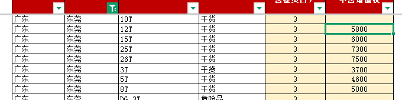

| 整车费率 | | | | | | | | | |
| 费率由运输部（MOT）审定。所报费率不得以捆绑中标为条件。 | | | | | | | | | |
| | | | | | | | | |
| 目的地 | | | | | | | | | |
| SHDR DC1（主配送中心）：上海临港新城普洛斯临港物流园洋浩路575号，中国上海市浦东新区 | | |
| TDSC 配送中心：上海市奉贤区航塘公路3088号C栋3楼迪士尼商店仓库，开瑞益上海配送中心C3，上海市奉贤区航塘公路3088号 | | |
| 币种：人民币 | 不含增值税 | | | | | | | | |
| | | | | | | | | |
| | | | SHDR DC1/TDSC DC | | | | |
| 出发省份 | 出发城市 | 车型 | 温度类型 | 运输天数（不含提货日） | 费率（人民币）不含增值税 | | | 附加费说明 | 每次附加费（人民币） |
| 安徽 | 巢湖 | 10T | 干货 | 1 | | | | 停车费（¥） | |
| 安徽 | 巢湖 | 12T | 干货 | 1 | 3000 | | | 理货费（¥）* | |
| 安徽 | 巢湖 | 15T | 干货 | 1 | 3000 | | | 危险品费（¥） | |
| 安徽 | 巢湖 | 26T | 干货 | 1 | 4000 | | | 空驶费（已派车未使用）（¥） | |
| 安徽 | 巢湖 | 3T | 干货 | 1 | 1500 | | | |
| 安徽 | 巢湖 | 5T | 干货 | 1 | 2000 | | |
| 安徽 | 巢湖 | 8T | 干货 | 1 | 2550 | | |
| 安徽 | 巢湖 | 40尺高柜 | 干货 - 自备箱 | 1 | | | |
| 安徽 | 天长 | 10T | 干货 | 1 | | | | | |
| 安徽 | 天长 | 12T | 干货 | 1 | 2700 | | | | |
| 安徽 | 天长 | 15T | 干货 | 1 | 2800 | | | | |
| 安徽 | 天长 | 25T | 干货 | 1 | 3300 | | | | |
| 安徽 | 天长 | 26T | 干货 | 1 | 3650 | | | | |
| 安徽 | 天长 | 3T | 干货 | 1 | 1300 | | | | |
| 安徽 | 天长 | 5T | 干货 | 1 | 2000 | | | | |
| 安徽 | 天长 | 8T | 干货 | 1 | 2300 | | | | |
| 安徽 | 天长 | 40尺高柜 | 干货 - 自备箱 | 1 | | | | | |
| 安徽 | 宣城 | 26T | 干货 | 1 | 3000 | | | | |
| 安徽 | 宣城 | 3T | 干货 | 1 | 1100 | | | | |
| 安徽 | 宣城 | 5T | 干货 | 1 | 1650 | | | | |
| 安徽 | 宣城 | 8T | 干货 | 1 | 1900 | | | | |
| 福建 | 泉州 | 10T | 干货 | 2 | | | | | |
| 福建 | 泉州 | 15T | 干货 | 2 | 4000 | | | | |
| 福建 | 泉州 | 25T | 干货 | 2 | 5200 | | | | |
| 福建 | 泉州 | 26T | 干货 | 2 | 5300 | | | | |
| 福建 | 泉州 | 5T | 干货 | 2 | 3000 | | | | |
| 福建 | 泉州 | 8T | 干货 | 2 | 3300 | | | | |
| 福建 | 泉州 | 40尺高柜 | 干货 - 自备箱 | 2 | | | | | |
| 福建 | 石狮 | 3T | 干货 | 2 | 2500 | | | | |
| 福建 | 石狮 | 5T | 干货 | 2 | 3000 | | | | |
| 福建 | 石狮 | 8T | 干货 | 2 | 3300 | | | | |
| 广东 | 东莞 | 10T | 干货 | 3 | | | | | |
| 广东 | 东莞 | 12T | 干货 | 3 | 5800 | | | | |
| 广东 | 东莞 | 15T | 干货 | 3 | 6000 | | | | |
| 广东 | 东莞 | 25T | 干货 | 3 | 7300 | | | | |
| 广东 | 东莞 | 26T | 干货 | 3 | 7500 | | | | |
| 广东 | 东莞 | 3T | 干货 | 3 | 3700 | | | | |
| 广东 | 东莞 | 5T | 干货 | 3 | 4600 | | | | |
| 广东 | 东莞 | 8T | 干货 | 3 | 5000 | | | | |
| 广东 | 东莞 | DG_3T | 危险品 | 3 | | | | | |
| 广东 | 东莞 | DG_8T | 危险品 | 3 | | | | | |
| 广东 | 东莞 | REF_3T | 冷藏 | 3 | | | | | |
| 广东 | 东莞 | 40尺高柜 | 干货 - 自备箱 | 3 | | | | | |
| 广东 | 佛山 | 3T | 干货 | 3 | 4000 | | | | |
| 广东 | 佛山 | 5T | 干货 | 3 | 4700 | | | | |
| 广东 | 佛山 | REF_3T | 冷藏 | 3 | | | | | |
| 广东 | 佛山 | REF_5T | 冷藏 | 3 | | | | | |
| 广东 | 河源 | 10T | 干货 | 3 | | | | | |
| 广东 | 河源 | 26T | 干货 | 3 | 7500 | | | | |
| 广东 | 河源 | 3T | 干货 | 3 | 3600 | | | | |
| 广东 | 河源 | DG_5T | 危险品 | 3 | | | | | |
| 广东 | 惠州 | DG_10T | 危险品 | 3 | | | | | |
| 广东 | 惠州 | 12T | 干货 | 3 | 5800 | | | | |
| 广东 | 惠州 | 15T | 干货 | 3 | 6000 | | | | |
| 广东 | 惠州 | 26T | 干货 | 3 | 7500 | | | | |
| 广东 | 惠州 | 3T | 干货 | 3 | 3700 | | | | |
| 广东 | 惠州 | 5T | 干货 | 3 | 4600 | | | | |
| 广东 | 惠州 | 8T | 干货 | 3 | 5000 | | | | |
| 广东 | 惠州 | 40尺高柜 | 干货 - 自备箱 | 3 | | | | | |
| 广东 | 江门 | 3T | 干货 | 3 | 4000 | | | | |
| 广东 | 汕头 | 10T | 干货 | 3 | | | | | |
| 广东 | 汕头 | 3T | 干货 | 3 | 3400 | | | | |
| 广东 | 汕头 | 5T | 干货 | 3 | 4300 | | | | |
| 广东 | 汕头 | REF_3T | 冷藏 | 3 | | | | | |
| 广东 | 汕头 | REF_5T | 冷藏 | 3 | | | | | |
| 广东 | 汕头 | 40尺高柜 | 干货 - 自备箱 | 3 | | | | | |
| 广东 | 深圳 | 10T | 干货 | 3 | | | | | |
| 广东 | 深圳 | 12T | 干货 | 3 | 5800 | | | | |
| 广东 | 深圳 | 15T | 干货 | 3 | 6000 | | | | |
| 广东 | 深圳 | 25T | 干货 | 3 | 7300 | | | | |
| 广东 | 深圳 | 26T | 干货 | 3 | 7500 | | | | |
| 广东 | 深圳 | 3T | 干货 | 3 | 3700 | | | | |
| 广东 | 深圳 | 5T | 干货 | 3 | 4600 | | | | |
| 广东 | 深圳 | 8T | 干货 | 3 | 5000 | | | | |
| 广东 | 深圳 | 40尺高柜 | 干货 - 自备箱 | 3 | | | | | |
| 广东 | 肇庆 | 5T | 干货 | 3 | 4700 | | | | |
| 广东 | 中山 | 10T | 干货 | 3 | | | | | |
| 广东 | 中山 | 12T | 干货 | 3 | 6000 | | | | |
| 广东 | 中山 | 15T | 干货 | 3 | 6300 | | | | |
| 广东 | 中山 | 26T | 干货 | 3 | 8000 | | | | |
| 广东 | 中山 | 3T | 干货 | 3 | 4100 | | | | |
| 广东 | 中山 | 40尺高柜 | 干货 - 自备箱 | 3 | | | | | |
| 广东 | 珠海 | 3T | 干货 | 3 | 4100 | | | | |
| 广东 | 珠海 | 40尺高柜 | 干货 - 自备箱 | 3 | | | | | |
| 广西 | 河池 | 26T | 干货 | 4 | 9100 | | | | |
| 广西 | 河池 | 5T | 干货 | 4 | 6000 | | | | |
| 广西 | 浦北 | 10T | 干货 | 4 | | | | | |
| 广西 | 浦北 | 12T | 干货 | 4 | 6800 | | | | |
| 广西 | 浦北 | 15T | 干货 | 4 | 7000 | | | | |
| 广西 | 浦北 | 26T | 干货 | 4 | 9100 | | | | |
| 广西 | 浦北 | 40尺高柜 | 干货 - 自备箱 | 4 | | | | | |
| 广西 | 浦北 | 45尺高柜 | 干货 - 自备箱 | 4 | | | | | |
| 广西 | 钦州 | 10T | 干货 | 4 | | | | | |
| 广西 | 钦州 | 12T | 干货 | 4 | 6800 | | | | |
| 广西 | 钦州 | 15T | 干货 | 4 | 7000 | | | | |
| 广西 | 钦州 | 26T | 干货 | 4 | 9100 | | | | |
| 广西 | 钦州 | 5T | 干货 | 4 | 6000 | | | | |
| 广西 | 钦州 | 8T | 干货 | 4 | 6500 | | | | |
| 广西 | 钦州 | 40尺高柜 | 干货 - 自备箱 | 4 | | | | | |
| 广西 | 钦州 | 45尺高柜 | 干货 - 自备箱 | 4 | | | | | |
| 河北 | 河间 | 15T | 干货 | 2 | 6300 | | | | |
| 河北 | 河间 | 40尺高柜 | 干货 - 自备箱 | 2 | | | | | |
| 湖南 | 郴州 | 10T | 干货 | 2 | | | | | |
| 湖南 | 郴州 | 12T | 干货 | 2 | 5100 | | | | |
| 湖南 | 郴州 | 15T | 干货 | 2 | 5200 | | | | |
| 湖南 | 郴州 | 26T | 干货 | 2 | 6500 | | | | |
| 湖南 | 郴州 | 8T | 干货 | 2 | 4300 | | | | |
| 湖南 | 郴州 | 40尺高柜 | 干货 - 自备箱 | 2 | | | | | |
| 湖南 | 资兴 | 12T | 干货 | 2 | 5100 | | | | |
| 湖南 | 资兴 | 8T | 干货 | 2 | 4300 | | | | |
| 江苏 | 常州 | 3T | 干货 | 1 | 900 | | | | |
| 江苏 | 连云港 | 10T | 干货 | 2 | | | | | |
| 江苏 | 连云港 | 25T | 干货 | 2 | 4100 | | | | |
| 江苏 | 连云港 | 5T | 干货 | 2 | 2700 | | | | |
| 江苏 | 连云港 | 8T | 干货 | 2 | 3000 | | | | |
| 江苏 | 宿迁 | 10T | 干货 | | | | | | |
| 江苏 | 宿迁 | 8T | 干货 | 1 | 2800 | | | | |
| 江苏 | 苏州 | 10T | 干货 | 1 | | | | | |
| 江苏 | 苏州 | 12T | 干货 | 1 | 1500 | | | | |
| 江苏 | 苏州 | 15T | 干货 | 1 | 1600 | | | | |
| 江苏 | 苏州 | 25T | 干货 | 1 | 1800 | | | | |
| 江苏 | 苏州 | 26T | 干货 | 1 | 2000 | | | | |
| 江苏 | 苏州 | 3T | 干货 | 1 | 700 | | | | |
| 江苏 | 苏州 | 5T | 干货 | 1 | 1100 | | | | |
| 江苏 | 苏州 | 8T | 干货 | 1 | 1400 | | | | |
| 江苏 | 苏州 | 40尺高柜 | 干货 - 自备箱 | 1 | | | | | |
| 江苏 | 扬州 | 12T | 干货 | 1 | 2500 | | | | |
| 江苏 | 扬州 | 5T | 干货 | 1 | 1900 | | | | |
| 江苏 | 扬州 | 8T | 干货 | 1 | 2100 | | | | |
| 江西 | 赣州 | 10T | 干货 | 2 | | | | | |
| 江西 | 赣州 | 12T | 干货 | 2 | 4400 | | | | |
| 江西 | 赣州 | 15T | 干货 | 2 | 4500 | | | | |
| 江西 | 赣州 | 25T | 干货 | 2 | 5600 | | | | |
| 江西 | 赣州 | 26T | 干货 | 2 | 5700 | | | | |
| 江西 | 赣州 | 3T | 干货 | 2 | 2600 | | | | |
| 江西 | 赣州 | 8T | 干货 | 2 | 3700 | | | | |
| 江西 | 赣州 | 40尺高柜 | 干货 - 自备箱 | 2 | | | | | |
| 江西 | 南昌 | REF_12T | 冷藏 | 2 | | | | | |
| 山东 | 青岛 | 10T | 干货 | 2 | | | | | |
| 山东 | 青岛 | 12T | 干货 | 2 | 4800 | | | | |
| 山东 | 青岛 | 3T | 干货 | 2 | 2200 | | | | |
| 山东 | 青岛 | 5T | 干货 | 2 | 3600 | | | | |
| 山东 | 青岛 | 8T | 干货 | 2 | 3800 | | | | |
| 山东 | 泰安 | 3T | 干货 | 2 | 2200 | | | | |
| 山东 | 泰安 | 5T | 干货 | 2 | 3700 | | | | |
| 山东 | 威海 | 3T | 干货 | 2 | 2500 | | | | |
| 山东 | 烟台 | 3T | 干货 | 2 | 2400 | | | | |
| 上海 | 上海 | 10T | 干货 | 1 | | | | | |
| 上海 | 上海 | 3T | 干货 | 1 | 500 | | | | |
| 上海 | 上海 | 5T | 干货 | 1 | 700 | | | | |
| 上海 | 上海 | 8T | 干货 | 1 | 800 | | | | |
| 上海 | 上海 | REF_3T | 冷藏 | 1 | | | | | |
| 上海 | 上海 | REF_5T | 冷藏 | 1 | | | | | |
| 上海 | 上海 | 40尺普柜 | 干货 - 自备箱 | 1 | | | | | |
| 上海 | 上海 | 40尺高柜 | 干货 - 自备箱 | 1 | | | | | |
| 上海 | 上海 | 25T | 干货 | 1 | 1100 | | | | |
| 陕西 | 安康 | 10T | 干货 | 3 | | | | | |
| 陕西 | 安康 | 15T | 干货 | 3 | 7200 | | | | |
| 陕西 | 安康 | 25T | 干货 | 3 | 9000 | | | | |
| 陕西 | 安康 | 26T | 干货 | 3 | 9100 | | | | |
| 陕西 | 安康 | 3T | 干货 | 3 | 4000 | | | | |
| 陕西 | 安康 | 5T | 干货 | 3 | 5000 | | | | |
| 陕西 | 安康 | 8T | 干货 | 3 | 5500 | | | | |
| 陕西 | 安康 | 20'GP | 干货 - 自备箱 | 3 | | | | | |
| 陕西 | 安康 | 40尺高柜 | 干货 - 自备箱 | 3 | | | | | |
| 浙江 | 湖州 | 25T | 干货 | 1 | 1800 | | | | |
| 浙江 | 湖州 | 26T | 干货 | 1 | 2000 | | | | |
| 浙江 | 湖州 | 3T | 干货 | 1 | 700 | | | | |
| 浙江 | 湖州 | 5T | 干货 | 1 | 1100 | | | | |
| 浙江 | 湖州 | 8T | 干货 | 1 | 1300 | | | | |
| 浙江 | 湖州 | 40尺高柜 | 干货 - 自备箱 | 1 | | | | | |
| 浙江 | 宁波 | 12T | 干货 | 1 | 1500 | | | | |
| 浙江 | 宁波 | 3T | 干货 | 1 | 700 | | | | |
| 浙江 | 宁波 | 5T | 干货 | 1 | 1000 | | | | |
| 浙江 | 平湖 | 25T | 干货 | 1 | 1100 | | | | |
| 浙江 | 平湖 | 3T | 干货 | 1 | 500 | | | | |
| 浙江 | 平湖 | 5T | 干货 | 1 | 700 | | | | |
| 浙江 | 平湖 | 8T | 干货 | 1 | 900 | | | | |
| 安徽 | 巢湖 | 20'GP | 干货 - 自备箱 | 1 | | | | | |
| 安徽 | 天长 | 20'GP | 干货 - 自备箱 | 1 | | | | | |
| 陕西 | 安康 | 12T | 干货 | 3 | 7000 | | | | |
| 江苏 | 常州 | 5T | 干货 | 1 | 1400 | | | | |
| 江苏 | 常州 | 8T | 干货 | 1 | 1600 | | | | |
| 江苏 | 常州 | 10T | 干货 | 1 | | | | | |
| 江苏 | 常州 | 12T | 干货 | 1 | 1700 | | | | |
| 江苏 | 常州 | 15T | 干货 | 1 | 1700 | | | | |
| 江苏 | 常州 | 25T | 干货 | 1 | 2100 | | | | |
| 江苏 | 常州 | 26T | 干货 | 1 | 2400 | | | | |
| 江苏 | 常州 | 20'GP | 干货 - 自备箱 | 1 | | | | | |
| 江苏 | 常州 | 40尺高柜 | 干货 - 自备箱 | 1 | | | | | |
| 安徽 | 巢湖 | 25T | 干货 | 1 | 3800 | | | | |
| 湖南 | 郴州 | 20'GP | 干货 - 自备箱 | 2 | | | | | |
| 湖南 | 郴州 | 3T | 干货 | 2 | 3100 | | | | |
| 湖南 | 郴州 | 5T | 干货 | 2 | 3800 | | | | |
| 湖南 | 郴州 | 25T | 干货 | 2 | 6400 | | | | |
| 广东 | 东莞 | 20'GP | 干货 - 自备箱 | 3 | | | | | |
| 广东 | 佛山 | 8T | 干货 | 3 | 5200 | | | | |
| 广东 | 佛山 | 10T | 干货 | 3 | | | | | |
| 广东 | 佛山 | 12T | 干货 | 3 | 5800 | | | | |
| 广东 | 佛山 | 15T | 干货 | 3 | 6100 | | | | |
| 广东 | 佛山 | 25T | 干货 | 3 | 7600 | | | | |
| 广东 | 佛山 | 26T | 干货 | 3 | 7800 | | | | |
| 广东 | 佛山 | 20'GP | 干货 - 自备箱 | 3 | | | | | |
| 广东 | 佛山 | 40尺高柜 | 干货 - 自备箱 | 3 | | | | | |
| 江西 | 赣州 | 20'GP | 干货 - 自备箱 | 2 | | | | | |
| 江西 | 赣州 | 5T | 干货 | 2 | 3300 | | | | |
| 广西 | 河池 | 3T | 干货 | 4 | 4700 | | | | |
| 广西 | 河池 | 8T | 干货 | 4 | 6500 | | | | |
| 广西 | 河池 | 10T | 干货 | 4 | | | | | |
| 广西 | 河池 | 12T | 干货 | 4 | 6800 | | | | |
| 广西 | 河池 | 15T | 干货 | 4 | 7000 | | | | |
| 广西 | 河池 | 25T | 干货 | 4 | 8900 | | | | |
| 广西 | 河池 | 20'GP | 干货 - 自备箱 | 4 | | | | | |
| 广西 | 河池 | 40尺高柜 | 干货 - 自备箱 | 4 | | | | | |
| 河北 | 河间 | 3T | 干货 | 2 | 3500 | | | | |
| 河北 | 河间 | 5T | 干货 | 2 | 5000 | | | | |
| 河北 | 河间 | 8T | 干货 | 2 | 5500 | | | | |
| 河北 | 河间 | 10T | 干货 | 2 | | | | | |
| 河北 | 河间 | 12T | 干货 | 2 | 6100 | | | | |
| 河北 | 河间 | 20'GP | 干货 - 自备箱 | 2 | | | | | |
| 河北 | 河间 | 25T | 干货 | 2 | 7800 | | | | |
| 河北 | 河间 | 26T | 干货 | 2 | 8000 | | | | |
| 广东 | 河源 | 5T | 干货 | 3 | 4400 | | | | |
| 广东 | 河源 | 8T | 干货 | 3 | 4800 | | | | |
| 广东 | 河源 | 12T | 干货 | 3 | 5400 | | | | |
| 广东 | 河源 | 15T | 干货 | 3 | 5500 | | | | |
| 广东 | 河源 | 25T | 干货 | 3 | 7200 | | | | |
| 广东 | 河源 | 20'GP | 干货 - 自备箱 | 3 | | | | | |
| 广东 | 河源 | 40尺高柜 | 干货 - 自备箱 | 3 | | | | | |
| 广东 | 惠州 | 10T | 干货 | 3 | | | | | |
| 广东 | 惠州 | 20'GP | 干货 - 自备箱 | 3 | | | | | |
| 广东 | 惠州 | 25T | 干货 | 3 | 7200 | | | | |
| 浙江 | 湖州 | 20'GP | 干货 - 自备箱 | 1 | | | | | |
| 浙江 | 湖州 | 10T | 干货 | 1 | | | | | |
| 浙江 | 湖州 | 12T | 干货 | 1 | 1600 | | | | |
| 浙江 | 湖州 | 15T | 干货 | 1 | 1600 | | | | |
| 广东 | 江门 | 5T | 干货 | 3 | 4800 | | | | |
| 广东 | 江门 | 8T | 干货 | 3 | 5200 | | | | |
| 广东 | 江门 | 10T | 干货 | 3 | | | | | |
| 广东 | 江门 | 12T | 干货 | 3 | 6000 | | | | |
| 广东 | 江门 | 15T | 干货 | 3 | 6200 | | | | |
| 广东 | 江门 | 25T | 干货 | 3 | 7700 | | | | |
| 广东 | 江门 | 26T | 干货 | 3 | 7900 | | | | |
| 广东 | 江门 | 20'GP | 干货 - 自备箱 | 3 | | | | | |
| 广东 | 江门 | 40尺高柜 | 干货 - 自备箱 | 3 | | | | | |
| 江苏 | 连云港 | 3T | 干货 | 2 | 1900 | | | | |
| 江苏 | 连云港 | 12T | 干货 | 2 | 3500 | | | | |
| 江苏 | 连云港 | 15T | 干货 | 2 | 3600 | | | | |
| 江苏 | 连云港 | 26T | 干货 | 2 | 4400 | | | | |
| 江苏 | 连云港 | 20'GP | 干货 - 自备箱 | 2 | | | | | |
| 江苏 | 连云港 | 40尺高柜 | 干货 - 自备箱 | 2 | | | | | |
| 江西 | 南昌 | 3T | 干货 | 2 | 2000 | | | | |
| 江西 | 南昌 | 5T | 干货 | 2 | 2700 | | | | |
| 江西 | 南昌 | 8T | 干货 | 2 | 3100 | | | | |
| 江西 | 南昌 | 10T | 干货 | 2 | | | | | |
| 江西 | 南昌 | 12T | 干货 | 2 | 3800 | | | | |
| 江西 | 南昌 | 15T | 干货 | 2 | 4000 | | | | |
| 江西 | 南昌 | 25T | 干货 | 2 | 4700 | | | | |
| 江西 | 南昌 | 26T | 干货 | 2 | 5000 | | | | |
| 江西 | 南昌 | 20'GP | 干货 - 自备箱 | 2 | | | | | |
| 江西 | 南昌 | 40尺高柜 | 干货 - 自备箱 | 2 | | | | | |
| 浙江 | 宁波 | 8T | 干货 | 1 | 1300 | | | | |
| 浙江 | 宁波 | 10T | 干货 | 1 | | | | | |
| 浙江 | 宁波 | 15T | 干货 | 1 | 1600 | | | | |
| 浙江 | 宁波 | 25T | 干货 | 1 | 1800 | | | | |
| 浙江 | 宁波 | 26T | 干货 | 1 | 2000 | | | | |
| 浙江 | 宁波 | 20'GP | 干货 - 自备箱 | 1 | | | | | |
| 浙江 | 宁波 | 40尺高柜 | 干货 - 自备箱 | 1 | | | | | |
| 浙江 | 平湖 | 10T | 干货 | 1 | | | | | |
| 浙江 | 平湖 | 12T | 干货 | 1 | 950 | | | | |
| 浙江 | 平湖 | 15T | 干货 | 1 | 1000 | | | | |
| 浙江 | 平湖 | 26T | 干货 | 1 | 1200 | | | | |
| 浙江 | 平湖 | 20'GP | 干货 - 自备箱 | 1 | | | | | |
| 浙江 | 平湖 | 40尺高柜 | 干货 - 自备箱 | 1 | | | | | |
| 广西 | 浦北 | 20'GP | 干货 - 自备箱 | 4 | | | | | |
| 广西 | 浦北 | 3T | 干货 | 4 | 4700 | | | | |
| 广西 | 浦北 | 5T | 干货 | 4 | 6000 | | | | |
| 广西 | 浦北 | 8T | 干货 | 4 | 6500 | | | | |
| 广西 | 浦北 | 25T | 干货 | 4 | 8900 | | | | |
| 山东 | 青岛 | 15T | 干货 | 2 | 5000 | | | | |
| 山东 | 青岛 | 25T | 干货 | 2 | 6200 | | | | |
| 山东 | 青岛 | 26T | 干货 | 2 | 6400 | | | | |
| 山东 | 青岛 | 20'GP | 干货 - 自备箱 | 2 | | | | | |
| 山东 | 青岛 | 40尺高柜 | 干货 - 自备箱 | 2 | | | | | |
| 广西 | 钦州 | 20'GP | 干货 - 自备箱 | 4 | | | | | |
| 广西 | 钦州 | 3T | 干货 | 4 | 4700 | | | | |
| 广西 | 钦州 | 25T | 干货 | 4 | 8900 | | | | |
| 福建 | 泉州 | 20'GP | 干货 - 自备箱 | 2 | | | | | |
| 福建 | 泉州 | 3T | 干货 | 2 | 2500 | | | | |
| 福建 | 泉州 | 12T | 干货 | 2 | 3800 | | | | |
| 上海 | 上海 | 20'GP | 干货 - 自备箱 | 1 | | | | | |
| 上海 | 上海 | 12T | 干货 | 1 | 900 | | | | |
| 上海 | 上海 | 15T | 干货 | 1 | 1000 | | | | |
| 上海 | 上海 | 26T | 干货 | 1 | 1200 | | | | |
| 广东 | 汕头 | 8T | 干货 | 3 | 4500 | | | | |
| 广东 | 汕头 | 12T | 干货 | 3 | 5400 | | | | |
| 广东 | 汕头 | 15T | 干货 | 3 | 5500 | | | | |
| 广东 | 汕头 | 20'GP | 干货 - 自备箱 | 3 | | | | | |
| 广东 | 汕头 | 25T | 干货 | 3 | 6900 | | | | |
| 广东 | 汕头 | 26T | 干货 | 3 | 7200 | | | | |
| 广东 | 深圳 | 20'GP | 干货 - 自备箱 | 3 | | | | | |
| 福建 | 石狮 | 10T | 干货 | 2 | | | | | |
| 福建 | 石狮 | 12T | 干货 | 2 | 3800 | | | | |
| 福建 | 石狮 | 15T | 干货 | 2 | 4000 | | | | |
| 福建 | 石狮 | 25T | 干货 | 2 | 5200 | | | | |
| 福建 | 石狮 | 26T | 干货 | 2 | 5300 | | | | |
| 福建 | 石狮 | 20'GP | 干货 - 自备箱 | 2 | | | | | |
| 福建 | 石狮 | 40尺高柜 | 干货 - 自备箱 | 2 | | | | | |
| 江苏 | 宿迁 | 3T | 干货 | 1 | 1700 | | | | |
| 江苏 | 宿迁 | 5T | 干货 | 1 | 2600 | | | | |
| 江苏 | 宿迁 | 12T | 干货 | 1 | 3100 | | | | |
| 江苏 | 宿迁 | 15T | 干货 | 1 | 3300 | | | | |
| 江苏 | 宿迁 | 25T | 干货 | 1 | 4300 | | | | |
| 江苏 | 宿迁 | 26T | 干货 | 1 | 4600 | | | | |
| 江苏 | 宿迁 | 20'GP | 干货 - 自备箱 | 1 | | | | | |
| 江苏 | 宿迁 | 40尺高柜 | 干货 - 自备箱 | 1 | | | | | |
| 江苏 | 苏州 | 20'GP | 干货 - 自备箱 | 1 | | | | | |
| 山东 | 泰安 | 8T | 干货 | 2 | 4000 | | | | |
| 山东 | 泰安 | 10T | 干货 | 2 | | | | | |
| 山东 | 泰安 | 12T | 干货 | 2 | 5000 | | | | |
| 山东 | 泰安 | 15T | 干货 | 2 | 5100 | | | | |
| 山东 | 泰安 | 25T | 干货 | 2 | 6400 | | | | |
| 山东 | 泰安 | 26T | 干货 | 2 | 6600 | | | | |
| 山东 | 泰安 | 20'GP | 干货 - 自备箱 | 2 | | | | | |
| 山东 | 泰安 | 40尺高柜 | 干货 - 自备箱 | 2 | | | | | |
| 山东 | 威海 | 5T | 干货 | 2 | 3900 | | | | |
| 山东 | 威海 | 8T | 干货 | 2 | 4100 | | | | |
| 山东 | 威海 | 10T | 干货 | 2 | | | | | |
| 山东 | 威海 | 12T | 干货 | 2 | 5300 | | | | |
| 山东 | 威海 | 15T | 干货 | 2 | 5500 | | | | |
| 山东 | 威海 | 25T | 干货 | 2 | 6700 | | | | |
| 山东 | 威海 | 26T | 干货 | 2 | 7000 | | | | |
| 山东 | 威海 | 20'GP | 干货 - 自备箱 | 2 | | | | | |
| 山东 | 威海 | 40尺高柜 | 干货 - 自备箱 | 2 | | | | | |
| 安徽 | 宣城 | 10T | 干货 | 1 | | | | | |
| 安徽 | 宣城 | 12T | 干货 | 1 | 2200 | | | | |
| 安徽 | 宣城 | 15T | 干货 | 1 | 2300 | | | | |
| 安徽 | 宣城 | 25T | 干货 | 1 | 2800 | | | | |
| 安徽 | 宣城 | 20'GP | 干货 - 自备箱 | 1 | | | | | |
| 安徽 | 宣城 | 40尺高柜 | 干货 - 自备箱 | 1 | | | | | |
| 江苏 | 扬州 | 3T | 干货 | 1 | 1300 | | | | |
| 江苏 | 扬州 | 10T | 干货 | 1 | | | | | |
| 江苏 | 扬州 | 15T | 干货 | 1 | 2600 | | | | |
| 江苏 | 扬州 | 25T | 干货 | 1 | 3200 | | | | |
| 江苏 | 扬州 | 26T | 干货 | 1 | 3500 | | | | |
| 江苏 | 扬州 | 20'GP | 干货 - 自备箱 | 1 | | | | | |
| 江苏 | 扬州 | 40尺高柜 | 干货 - 自备箱 | 1 | | | | | |
| 山东 | 烟台 | 5T | 干货 | 2 | 3900 | | | | |
| 山东 | 烟台 | 8T | 干货 | 2 | 4000 | | | | |
| 山东 | 烟台 | 10T | 干货 | 2 | | | | | |
| 山东 | 烟台 | 12T | 干货 | 2 | 5000 | | | | |
| 山东 | 烟台 | 15T | 干货 | 2 | 5200 | | | | |
| 山东 | 烟台 | 25T | 干货 | 2 | 6700 | | | | |
| 山东 | 烟台 | 26T | 干货 | 2 | 6800 | | | | |
| 山东 | 烟台 | 20'GP | 干货 - 自备箱 | 2 | | | | | |
| 山东 | 烟台 | 40尺高柜 | 干货 - 自备箱 | 2 | | | | | |
| 广东 | 肇庆 | 3T | 干货 | 3 | 4000 | | | | |
| 广东 | 肇庆 | 8T | 干货 | 3 | 5200 | | | | |
| 广东 | 肇庆 | 10T | 干货 | 3 | | | | | |
| 广东 | 肇庆 | 12T | 干货 | 3 | 6000 | | | | |
| 广东 | 肇庆 | 15T | 干货 | 3 | 6200 | | | | |
| 广东 | 肇庆 | 25T | 干货 | 3 | 7700 | | | | |
| 广东 | 肇庆 | 26T | 干货 | 3 | 7900 | | | | |
| 广东 | 肇庆 | 20'GP | 干货 - 自备箱 | 3 | | | | | |
| 广东 | 肇庆 | 40尺高柜 | 干货 - 自备箱 | 3 | | | | | |
| 广东 | 中山 | 20'GP | 干货 - 自备箱 | 3 | | | | | |
| 广东 | 中山 | 5T | 干货 | 3 | 4800 | | | | |
| 广东 | 中山 | 8T | 干货 | 3 | 5300 | | | | |
| 广东 | 中山 | 25T | 干货 | 3 | 7700 | | | | |
| 广东 | 珠海 | 5T | 干货 | 3 | 4800 | | | | |
| 广东 | 珠海 | 8T | 干货 | 3 | 5300 | | | | |
| 广东 | 珠海 | 10T | 干货 | 3 | | | | | |
| 广东 | 珠海 | 12T | 干货 | 3 | 6000 | | | | |
| 广东 | 珠海 | 15T | 干货 | 3 | 6300 | | | | |
| 广东 | 珠海 | 20'GP | 干货 - 自备箱 | 3 | | | | | |
| 广东 | 珠海 | 25T | 干货 | 3 | 7800 | | | | |
| 广东 | 珠海 | 26T | 干货 | 3 | 8000 | | | | |
| 湖南 | 资兴 | 3T | 干货 | 2 | 3100 | | | | |
| 湖南 | 资兴 | 5T | 干货 | 2 | 3800 | | | | |
| 湖南 | 资兴 | 10T | 干货 | 2 | | | | | |
| 湖南 | 资兴 | 15T | 干货 | 2 | 5200 | | | | |
| 湖南 | 资兴 | 25T | 干货 | 2 | 6400 | | | | |
| 湖南 | 资兴 | 26T | 干货 | 2 | 6500 | | | | |
| 湖南 | 资兴 | 20'GP | 干货 - 自备箱 | 2 | | | | | |
| 湖南 | 资兴 | 40尺高柜 | 干货 - 自备箱 | 2 | | | | | |
| 广西 | 北海 | 3T | 干货 | 4 | 5000 | | | | |
| 广西 | 北海 | 5T | 干货 | 4 | 6200 | | | | |
| 广西 | 北海 | 8T | 干货 | 4 | 6500 | | | | |
| 广西 | 北海 | 10T | 干货 | 4 | | | | | |
| 广西 | 北海 | 12T | 干货 | 4 | 6800 | | | | |
| 广西 | 北海 | 15T | 干货 | 4 | 7000 | | | | |
| 广西 | 北海 | 25T | 干货 | 4 | 8900 | | | | |
| 广西 | 北海 | 26T | 干货 | 4 | 9100 | | | | |
| 广西 | 北海 | 20'GP | 干货 - 自备箱 | 4 | | | | | |
| 广西 | 北海 | 40尺高柜 | 干货 - 自备箱 | 4 | | | | | |
| 浙江 | 温州 | 3T | 干货 | 1 | 1200 | | | | |
| 浙江 | 温州 | 5T | 干货 | 1 | 1600 | | | | |
| 浙江 | 温州 | 8T | 干货 | 1 | 1850 | | | | |
| 浙江 | 温州 | 10T | 干货 | 1 | | | | | |
| 浙江 | 温州 | 12T | 干货 | 1 | 2200 | | | | |
| 浙江 | 温州 | 15T | 干货 | 1 | 2200 | | | | |
| 浙江 | 温州 | 25T | 干货 | 1 | 2600 | | | | |
| 浙江 | 温州 | 26T | 干货 | 1 | 3000 | | | | |
| 浙江 | 温州 | 20'GP | 干货 - 自备箱 | 1 | | | | | |
| 浙江 | 温州 | 40尺高柜 | 干货 - 自备箱 | 1 | | | | | |
| | | | | | | | | |
| | | | | | | | | |
| | | | | | | | | |
| | | | | | | |  图片 1 · 锚点 R419C10 | |